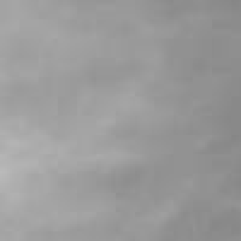
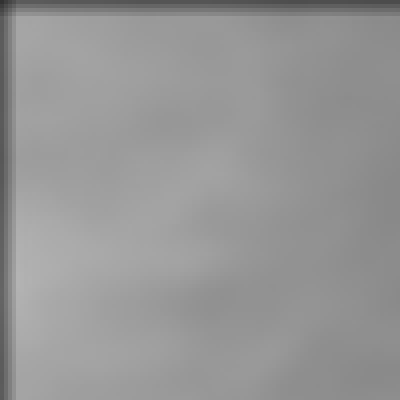

Fun with Filters and Frequencies
Project 2 · Ariq Koh · CS180, Fall 2026 · convolution, edges and frequencies
This page covers Part 1.1 so far, and I'll add the other parts as I finish them.
1.1 Convolution from scratch
Convolving an image with a kernel means flipping the kernel, sliding it over the
image, and at every position multiplying it against the pixels underneath and summing
the result. I wrote this in numpy only, first with four nested loops and then with
two, on a zero-padded copy of the image. scipy.signal.convolve2d is used only
as the reference to check against, and cv2 only reads and saves images.
Padding
Both versions pad the image with zeros first so the kernel can be centered on the edge pixels. For an image of size H×W and a kernel of size kh×kw:
| Mode | Top / left padding | Bottom / right padding | Output size |
|---|---|---|---|
| same | kh−1−(kh−1)//2 / kw−1−(kw−1)//2 | (kh−1)//2 / (kw−1)//2 | H × W |
| full | kh−1 / kw−1 | kh−1 / kw−1 | (H+kh−1) × (W+kw−1) |
For an odd kernel, "same" padding is just k//2 on every side. For an even one,
like the 1×2 Dx and 2×1 Dy below, the padding can't be symmetric, so the extra
row or column goes on the top or left. That choice is what makes the output line up
with scipy's mode="same".
def pad_img(image, kernel, mode="same"):
# Zero pad the image ("same" keeps the output size, "full" gives every position the kernel overlaps)
height, width = image.shape[:2]
kernel_h, kernel_w = len(kernel), len(kernel[0])
if mode == "full":
top, left = kernel_h - 1, kernel_w - 1
bottom, right = kernel_h - 1, kernel_w - 1
elif mode == "same":
bottom, right = (kernel_h - 1) // 2, (kernel_w - 1) // 2
top, left = kernel_h - 1 - bottom, kernel_w - 1 - right
else:
raise ValueError(f"Unknown padding mode: {mode}")
padded_image = np.zeros((height + top + bottom, width + left + right))
padded_image[top:top + height, left:left + width] = image
return padded_imageFour loops
The outer two loops visit every output pixel, and the inner two loops walk over the
kernel, accumulating one product at a time. The flip is the
[::-1, ::-1] on the kernel, which reverses it along both axes.
def convol_img(image, kernel, mode="same"):
# Perform convolution of the image with the given kernel (four for loop implementation)
kernel_h, kernel_w = len(kernel), len(kernel[0])
padded_image = pad_img(image, kernel, mode)
flipped_kernel = np.array(kernel)[::-1, ::-1]
height = padded_image.shape[0] - kernel_h + 1
width = padded_image.shape[1] - kernel_w + 1
output_image = np.zeros((height, width))
for i in range(height):
for j in range(width):
sum_val = 0.0
for ki in range(kernel_h):
for kj in range(kernel_w):
sum_val += padded_image[i + ki][j + kj] * flipped_kernel[ki][kj]
output_image[i][j] = sum_val
return output_imageTwo loops
The two inner loops are replaced by one array operation. I slice out the
kernel-sized window of the padded image at the current pixel, multiply it elementwise
with the flipped kernel, and sum the result with np.sum.
def convol_img_2loops(image, kernel, mode="same"):
# Perform convolution of the image with the given kernel (two for loop implementation)
kernel_h, kernel_w = len(kernel), len(kernel[0])
padded_image = pad_img(image, kernel, mode)
flipped_kernel = np.array(kernel)[::-1, ::-1]
height = padded_image.shape[0] - kernel_h + 1
width = padded_image.shape[1] - kernel_w + 1
output_image = np.zeros((height, width))
for i in range(height):
for j in range(width):
output_image[i][j] = np.sum(padded_image[i:i + kernel_h, j:j + kernel_w] * flipped_kernel)
return output_imageThe kernels
The box filter averages a 9×9 neighborhood, so each entry is 1/81 and the kernel
sums to 1. Dx and Dy are the finite difference operators. Because convolution flips the
kernel, convolving with [1, -1] gives f(x) − f(x−1),
the final value minus the initial one, so an edge that gets brighter to the right comes
out positive.
Dx = [[1, -1]]
Dy = [[1], [-1]]
def box_kernel(size):
# Generate a 2D box filter kernel (every entry is 1 / size^2 so it sums to 1)
kernel = []
for i in range(size):
row = []
for j in range(size):
row.append(1 / size**2)
kernel.append(row)
return kernelChecking against scipy
The reference call zero-fills the border the same way my padding does. I run all three implementations on the same image and kernel, in both padding modes, and assert that they agree.
def convol_with_scipy(image, kernel, mode="same"):
return scipy.signal.convolve2d(image, kernel, mode=mode, boundary="fill", fillvalue=0)
# in part1.py, for each of the box filter, Dx and Dy, and for mode in ["same", "full"]:
cimg, t_four = timed(convol_img, img, kernel, mode)
c2img, t_two = timed(convol_img_2loops, img, kernel, mode)
scimg, t_scipy = timed(convol_with_scipy, img, kernel, mode)
assert np.allclose(cimg, scimg), f"four loop {name} ({mode}) does not match scipy"
assert np.allclose(c2img, scimg), f"two loop {name} ({mode}) does not match scipy"Results
I read the photo as grayscale with cv2.imread(..., cv2.IMREAD_GRAYSCALE) and
convolved it with the 9×9 box filter, Dx and Dy, using "same" padding. The
four-loop, two-loop and scipy outputs are identical, and the saved images
below are from my four-loop version.


Runtime
I timed each implementation once on the full 1280×960 image, on my laptop (Python 3.12, NumPy 2.4, SciPy 1.17). The scipy times exclude importing it.
| Kernel | Mode | Output size | Four loops | Two loops | scipy | Max |diff| |
|---|---|---|---|---|---|---|
| 9×9 box | same | 1280 × 960 | 26.20 s | 2.58 s | 0.084 s | 6.3e-13 |
| 9×9 box | full | 1288 × 968 | 26.25 s | 2.49 s | 0.084 s | 6.3e-13 |
| Dx | same | 1280 × 960 | 0.93 s | 2.44 s | 0.009 s | 0 |
| Dx | full | 1280 × 961 | 0.95 s | 2.46 s | 0.008 s | 0 |
| Dy | same | 1280 × 960 | 1.00 s | 2.51 s | 0.012 s | 0 |
| Dy | full | 1281 × 960 | 0.98 s | 2.47 s | 0.011 s | 0 |
The four-loop version does one Python-level multiply-add per kernel entry per pixel, about 100 million of them for the 9×9 box filter, so its time grows with the kernel: 26 s for the box filter against about 1 s for the two-entry Dx and Dy. The two-loop version makes a handful of NumPy calls per pixel instead, so its time barely depends on the kernel, about 2.5 s for all three. That makes it roughly 10 times faster for the box filter, but about 2.5 times slower for Dx and Dy, where the four-loop version only has two products to add and NumPy's per-call overhead costs more than it saves. scipy is much faster than either: 0.084 s for the box filter, about 30 times faster than my two-loop version and 300 times faster than the four-loop one, and about 0.01 s for Dx and Dy, because its loops run in compiled code instead of Python.
Boundary handling
Both use zero fill, so they agree. The largest difference from scipy's boundary="fill", fillvalue=0 is 6.3e-13 for the box filter (floating-point rounding) and exactly 0 for Dx and Dy. The mode only changes the output size: "same" returns H×W, while "full" returns every position where the kernel overlaps the image at all, which for the 9×9 filter is 8 pixels taller and wider (1288×968). Zero padding has two visible costs. For the box filter, output pixels within 4 pixels of the edge average in zeros and come out darker. In Figure 5 the top row falls from 152 to 85 and is back to the input's value by the fifth row. For Dx and Dy it creates a fake edge: the first column of Dx is the pixel value minus zero, so it equals the image's own left column. In the full-size Dx image that column has a mean of 155, against 5 for the column next to it, a one-pixel bright line that is too thin to see at the size shown in Figure 3. The same happens along the top row of Dy (Figure 4). scipy can pad by reflecting (boundary="symm") or wrapping instead, which avoids both problems. I only implemented zero fill, as the assignment asks.


Figure 5. The top-left 100×100 pixels, enlarged 4×. Left: the input. Right: after the box filter, darkening over the outer 4 pixels where the kernel reaches into the zero padding.